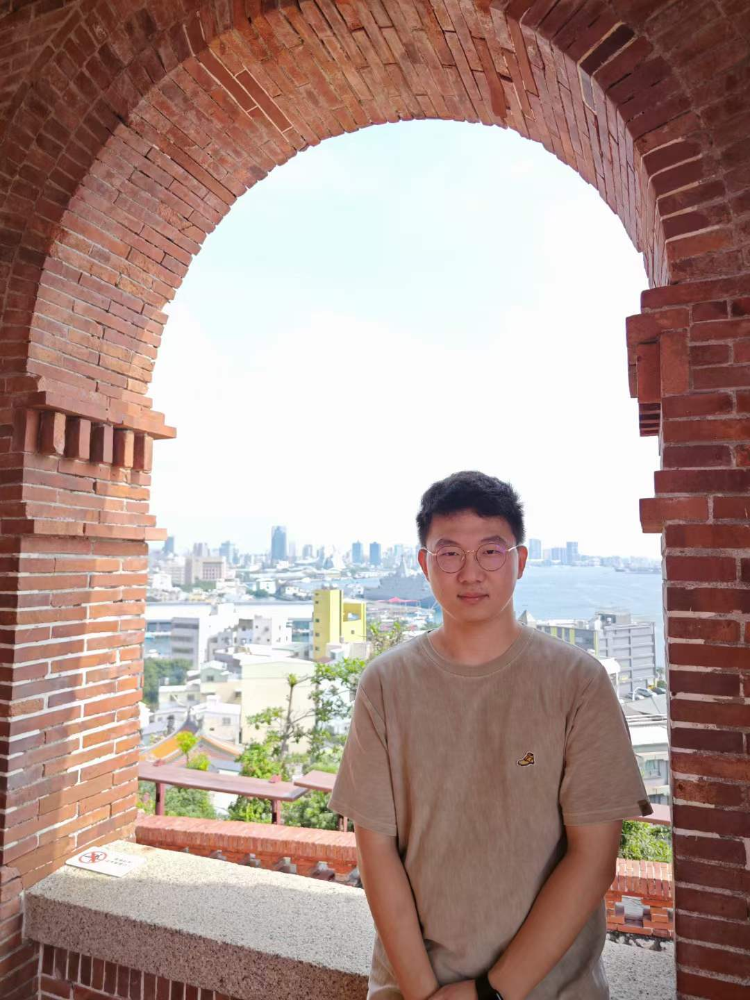

|
Ning Wang
I am a first-year PhD at City University of Hong Kong advised by Prof. Nan Guan .
My master and bachelor's degrees were obtained from Xi'an Jiaotong University,
majoring in Control Science Electrical Engineering, respectively.
My research interests lie in the intersection of deep learning and automatic hardware
design and bioinformatics.
In particular, I work on hardware language generation and debugging, and RNA language
modeling.
Google
Scholar /
GitHub /
Email
|

|
News
- 2024-08 Our model aims for Verilog code generation from natural language
descriptions, Veriseek, is on arXiv! With golden code feedback, it achieves
state-of-the-art performance.
[paper] [code]
- 2024-05 Our paper on RNA language modeling, RNAErnie, is published in Nature
Machine Intelligence! It achieves state-of-the-art performance on multiple RNA
language tasks.
[paper] [code]
- 2024-08 Gave a talk at Microsoft AI APRD on RNAErnie!
[slides]
- 2023-06 I graduated from Xi'an Jiaotong University enrolled as a Ph.D.
student at
Computer Science, City University of Hong Kong!
|
|